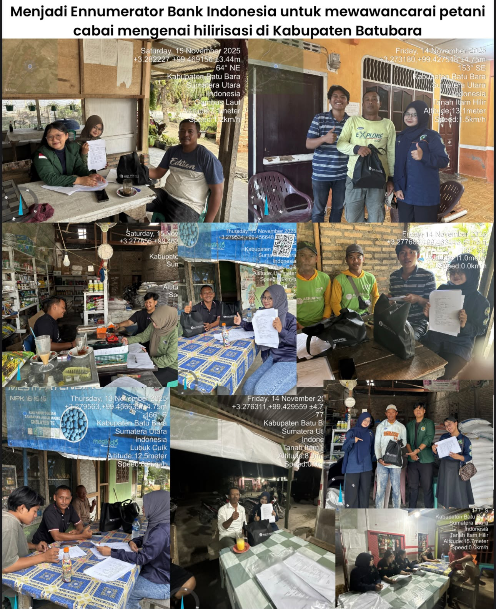

ENNUMERATOR
Bank Indonesia - Lima Puluh Kota, Lima Puluh, KAB. BATU BARA, SUMATERA UTARA
Menjadi Enumerator Bank Indonesia Terkait Minat Petani Cabai untuk Melakukan Hilirisasi Pertanian.
Kontribusi utama
- Mengumpulkan data primer dari 18 responden petani dalam waktu 3 hari.
- Melaksanakan wawancara terstruktur, dokumentasi, dan perekaman data lapangan.
- Mengoordinasikan survei serta mengidentifikasi lokasi sentra produksi hortikultura.
- Melakukan input, validasi, rekapitulasi data, dan penyusunan laporan penelitian.
HASIL / DAMPAK
Mengumpulkan dan mengolah 18 data primer petani yang menghasilkan informasi terstruktur mengenai minat dan potensi pengembangan hilirisasi hasil pertanian sebagai bahan pendukung analisis.